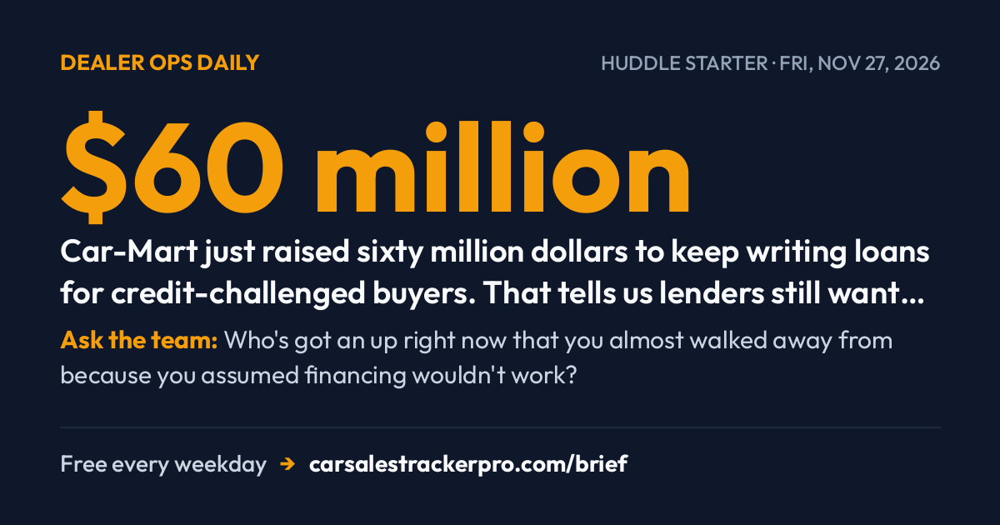

America's Car-Mart Lands $60M as Subprime Credit Holds


America's Car-Mart's $60 million capital raise is the clearest read yet on where subprime lending stands heading into Q4 close. If the market's hungriest lender to credit-challenged buyers is still finding money, your toughest approvals aren't dead — they're just slower.
☕ HUDDLE STARTER · read it aloud in 60 seconds
$60 million — Car-Mart just raised sixty million dollars to keep writing loans for credit-challenged buyers. That tells us lenders still want this paper — your tough approvals aren't dead, they just take more shopping.
Ask the team: Who's got an up right now that you almost walked away from because you assumed financing wouldn't work?
🚗 Market numbers
Car-Mart Raises $60M, Signals Subprime Paper Still Has Buyers
America's Car-Mart (NASDAQ: CRMT) said Nov. 24 it secured $60 million in new capital and a committed buyer for its receivables, according to the company's press release republished by CBT News. Car-Mart originates and services its own paper for credit-challenged used-vehicle buyers — the segment lenders have been quietest about all year.
Use it today: If you've been telling marginal-credit ups that financing dried up, update the word track — capital is still moving into subprime paper. Ask your desk which lenders are actually approving this week before you write off a deal.
Sources: CBT News
Nine Photo Checks That Decide If Your Listing Gets a Click
Digital Dealer published a nine-point photo audit for used-vehicle listings, arguing that for most online shoppers the photo set is the only salesperson they meet before deciding to call. The checklist flags common misses — bad interior lighting, missing odometer shots, no photo of known flaws — that quietly kill click-through before a human ever gets involved.
Use it today: Pull up three of your oldest listings and run them against the checklist — bad photos are one of the few things slowing a sale that you can fix in 20 minutes with your own phone.
Sources: Digital Dealer / Dealer Magazine
🏬 The floor
Andrews Automotive Adds Two Georgia Stores in Honda, Nissan Deal
Andrews Automotive Group acquired Flowers Honda and Flowers Nissan in Thomasville, Georgia, from seller David Flowers, according to CBT News. Gill Automotive Group advised the seller on the transaction — the latest in a steady run of single-point stores changing hands into multi-rooftop groups this quarter.
Use it today: If your store is part of a group that's acquiring, start building your pitch for a role at the new rooftop now — early movers into a newly combined store usually get first pick of book and territory.
Sources: CBT News
PureCars Rolls Out a Single Customer Data Platform for Dealers
PureCars launched a unified customer data platform that combines CRM, equity mining, and outbound marketing into one view, according to AutoSuccess. The pitch: one customer record instead of the usual patchwork of disconnected tools that make it easy to miss a repeat buyer or an equity opportunity.
Use it today: Ask your marketing manager whether your store is piloting a unified CDP — if a competitor's BDC can see equity and contact history in one screen, they're calling your past customers before you do.
Sources: AutoSuccess
Your Dealership May Be Showing Up in AI Search — and Still Losing the Sale
AutoSuccess reported new research from Zach Billings finding that many dealerships showing up in AI chatbot answers and summaries aren't converting those mentions into actual store visits or leads — the metrics some tools sell as wins may not track to showroom traffic. The findings haven't been independently verified beyond AutoSuccess's reporting.
Use it today: Next time a lead says they 'found you on ChatGPT,' ask what they actually searched — it's the fastest way to learn whether your store's AI visibility is turning into real ups.
Sources: AutoSuccess
Forward this to someone on your floor who'd use it before the morning meeting — no prizes, just a better brief.
Commission calculator
Estimate this month's check from units, gross, pack and minis.
ComparisonPay plan comparison
Put two plans side by side under the same month.
Free trackerTrack every deal
Log each car and watch your month-to-date pay climb.